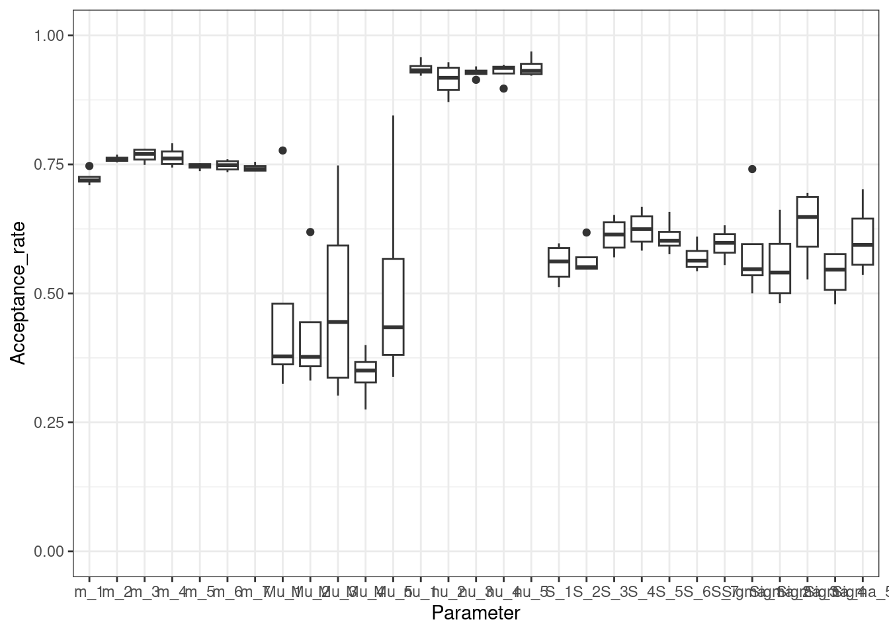
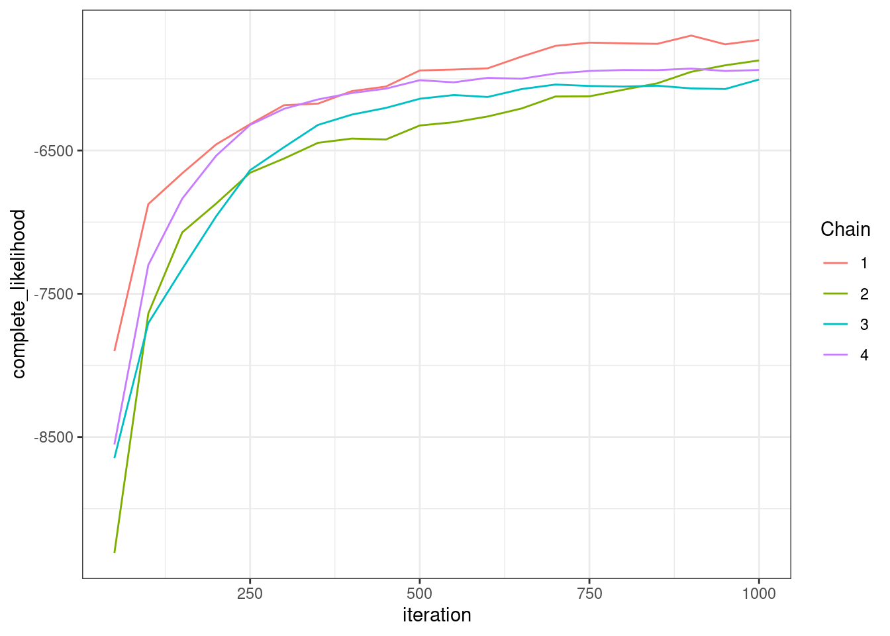
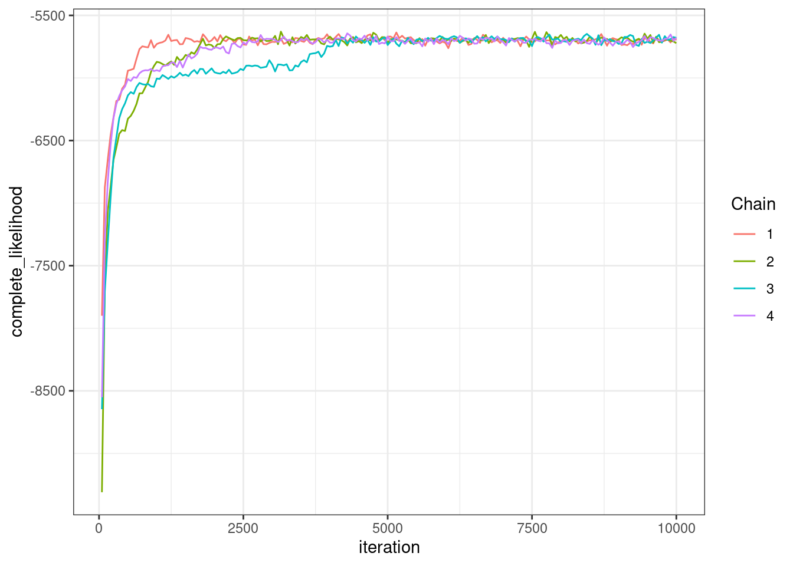
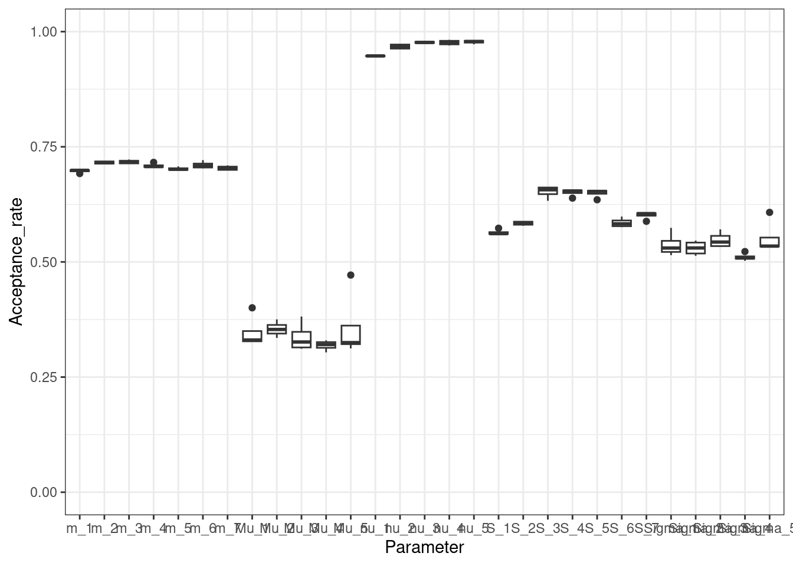

My R package, batchmix, finally landed on CRAN. This implements the models described in my paper (Coleman et al. 2022), mixture models aimed at accounting for batch effects.
The model is very similar to the ComBat algorithm of Johnson, Li, and Rabinovic (2007), but infers batch effects and class at the same time. This makes the method semi-supervised as it uses the inferred labels to update class parameters. This offers some protection from unequal representation of class across batches which is nice.
This post will essentially recreate the vignette for the package showing how to use it.
Data generation
We simulate some data using the generateBatchData function.
This gives us a named list with two related datasets, the observed_data which includes batch effects and the corrected_data which is batch-free. It also includes group_IDs, a vector indicating class membership for each item, batch_IDs, which indicates batch of origin for each item, and fixed, which indicates which labels are observed and fixed in the model. We pull these out of the names list in the format that the modelling functions desire them.
Given some data, we are interested in modelling it. We assume here that the set of observed labels includes at least one example of each class in the data.
We want to assess two things. First, how frequently the proposed parameters in the Metropolis-Hastings step are accepted:
plotAcceptanceRates(mcmc_output)

Secondly, we want to asses how well our chains have converged. To do this we plot the complete_likelihood of each chain. This is the quantity most relevant to a clustering/classification, being dependent on the labels. The observed_likelihood is independent of labels and more relevant for density estimation.
plotLikelihoods(mcmc_output)

We see that our chains disagree. We have to run them for more iterations. We use the continueChains function for this.
R_new <-9000# Given an initial value for the parametersnew_output <-continueChains( mcmc_output, X, fixed, batch_vec, R_new,keep_old_samples =TRUE)
To see if the chains better agree we re-plot the likelihood.
plotLikelihoods(new_output)

We also re-check the acceptance rates.
plotAcceptanceRates(new_output)

This looks like several of the chains agree by the 5,000th iteration.
Process chains
We process the chains, acquiring point estimates of different quantities.
# Burn inburn <-5000# Process the MCMC samplesprocessed_samples <-processMCMCChains(new_output, burn)
Coleman, Stephen, Xaquin Castro Dopico, Gunilla B. Karlsson Hedestam, Paul D. W. Kirk, and Chris Wallace. 2022. “A Semi-Supervised Bayesian Mixture Modelling Approach for Joint Batch Correction and Classification.”bioRxiv. https://doi.org/10.1101/2022.01.14.476352.
Johnson, W. Evan, Cheng Li, and Ariel Rabinovic. 2007. “Adjusting Batch Effects in Microarray Expression Data Using Empirical Bayes Methods.”Biostatistics 8 (1): 118–27. https://doi.org/10.1093/biostatistics/kxj037.
![]()